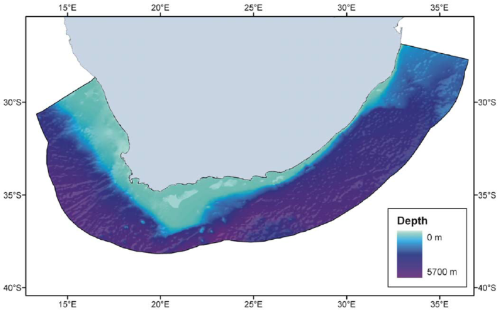
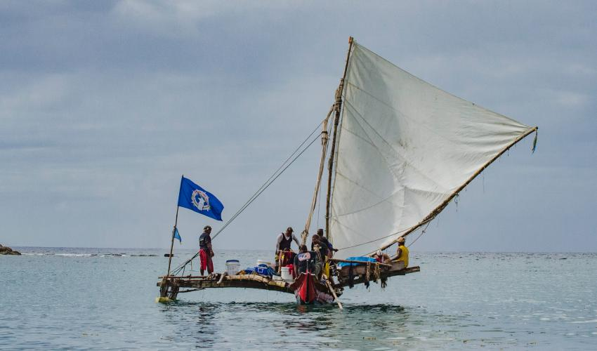

In this blog post, I attempt to highlight the importance of open access to ocean data. Collecting data from the ocean, especially the deep ocean, is an incredibly costly and risky operation that only a select number of countries around the world are able to undertake. Although only a few countries collect this data, it is essential that lesser able sovereign states can access it in order to make their own decisions regarding climate change, fishing practices and many other commitments that have economic and social ramifications. There are efforts to confront this problem and I try to highlight a few of these.
Background in Ocean Data Collection and Feasibility
The ocean has always been a difficult place to work in. Whether you are on its surface or beneath, the dynamics of wind, currents, waves and other factors set ocean-related activities far apart from those in the terrestrial environment. On land, aircraft can quickly create detailed mapping of large areas and access is much easier. The difficult conditions of the ocean, paired with the ocean’s expansive nature, require that a vast number of resources go into collecting data there. It can cost more than US$30,000 per day to operate a modern research vessel, excluding the cost of scientific personnel and the actual research being done. (Lauro et al. 2014). Due to these constraints, there have been only a few countries that have collected the lion’s share of ocean data and, who ultimately control the access to that data. This information is crucial to so many countries so that they can plan for climate change mitigation, prepare for natural disaster impacts and know how to use the ocean’s resources in a sustainable way.
South Africa: A Case Study in Data Access
As I mentioned, open access to data regarding the ocean is often limited due to funding restraints or other barriers. Operating without this knowledge can have ramifications for sustainability of resources and the overall contribution to local and global economies and cultures. South Africa can be used as an example of a nation highly reliant on the ocean and its resources but influenced by insufficient access to data. In South Africa, 85% of the mainland ocean territory is within the deep-sea category (Sink et al., n.d.).

Information about the deep sea in South Africa, as well as other nations, is necessary to understand how increased industrial activities (i.e., oil extraction) may affect marine ecosystems present in that area (Sink et al., n.d.). Additionally, a lack of information could lead to a country missing out on potentially beneficial marine resources (Sink et al., n.d.). One can see how a disparity could arise between a country with enough knowledge to understand its marine territory and one without. Even if two countries had the same resources present in their waters, they must know that these resources exist and the best method for access in order to develop strategies to acquire it. Beyond beneficial natural resources, there are many culturally important aspects of the ocean in South Africa. For example, some Nguni cultures consider many of the most powerful ancestors to reside in the deep sea (Sink et al., n.d.). This cultural aspect is often glossed over in favor of hard data, and this is something that I will touch on later.
Clearly, the ocean landscape is crucially important to South Africa, both for current projects as well as potential future ventures. A major issue there has been that the majority of research in the region has been conducted by international scientists and stakeholders of private companies, with very little to no local collaboration (Sink et al., n.d.). Much of the data collected by private industries was never published or shared with South African interests and some of it was even kept as confidential (Sink et al., n.d.). This is a direct threat to open data access and, as a result, research done by South Africa took an incomplete and fragmented path. This potentially could have slowed innovation in South African deep-sea technology and/or led to damaged ecosystems. Both could potentially have been minimized, had the data been accessible.
Aside from South African entities being unable to access externally collected data, there also have existed issues inside the country involving its citizens being unable to access information from various organizations within their own government. A paper by Sink et al. encapsulates this best by saying that “As a result of past laws of segregation, exclusion and discrimination, multiple sectors including biodiversity, marine science and marine management are still largely inaccessible to the vast majority of South African citizens, and there are significant barriers preventing general access to participation and opportunities” (Sink et al., n.d.). This is evidence that culture can have a direct impact on the progress of science. Although South Africa is perhaps the most well-known for its past policies of racial prejudice, it is by no means unique in this sense. Culture is malleable and these prohibitory measures can be corrected but, for any of this to be fixed, it must first be recognized as a barrier to be addressed. Understanding the history of a country can often help explain many of the systems that are currently in place.
What Can Be Done to Improve Data Access?
Many of the data access bottlenecks do not stem from a strict denial of access, but rather an issue of not knowing where the data is kept. The phenomenon of many different organizations holding all different types of ocean data can inhibit data access at the country, state or regional level. The good news is that this is a solvable problem.
In 2010, the European Commission pointed out this very issue of marine data access. They indicated that information was held by hundreds of organizations in the EU and that finding out who held that data was a major problem (Shepherd 2018). Finding where the data resided was the first hurdle, which was followed by a lengthy negotiation for access. These procedures made it difficult or impossible to piece different data sets together for a complete picture of any issue that needed to be addressed. Generally, the system was very decentralized, making for an incredibly inefficient process. The solution that the EU came up with was the European Marine Observation and Data Network (EMODnet) (Shepherd 2018). The main idea behind this was that the data should be maintained by organizations that had collected or own the data, but that it should all be accessed in a common way. EMODnet made it possible for a user to search for and retrieve all measurements of a single parameter within any given time and space window, no matter where the data was stored (Shepherd 2018). This was an incredible step in data access for the EU. No longer did someone have to track down a data set, request permission, wait for permission and then sort through the data for an area of interest. Now, all one had to do was specify a few parameters and then click a button.
This problem of data access is not limited to the European Union. It is a problem that has been in many parts of the world, with all different types of data. A common thread in the solutions that have been developed is centralization and standardization. It is acceptable for data to be stored in different locations and owned by different entities, but if access is needed, it should be easy to find and retrieve.
A New Framework for Looking at Data

For a very long time, the term “data” has been reserved for empirical and quantifiable measurements. It is associated with the hard sciences and, in relation to the ocean, it takes the form of sea surface temperature, counts of species, wind speed and other similar measurements. All this collected information is incredibly vast and undeniably important. It is what allows us to conduct commerce, extract valuable resources and, hopefully, protect this natural environment. There is a wealth of policy-focused research on topics like fisheries science and ocean acidification (“Raising and Integrating the Cultural Values of the Ocean | IUCN” 2017). Policy makers are able to take this research into account when they are forming decisions. Something that is often neglected in the formation of these decisions is cultural data. This is something that is beginning to gain traction and is being interwoven into research being done. However, for all the wealth of the available empirical research, there is still an equally insufficient amount of policy relevant documentation that describes the ocean as a cultural entity (“Raising and Integrating the Cultural Values of the Ocean | IUCN” 2017).
A major challenge in including this cultural data is finding the effective means to document it in a way that can be used for decision-making. Much of this knowledge comes in the form of stories, genealogies, philosophical and ethical systems (“Raising and Integrating the Cultural Values of the Ocean | IUCN” 2017). Unlike empirical data, which can be tabulated and clearly presented in data visualizations, the cultural information cannot be easily counted and run through a computer program. The solution to this is going to involve collaboration between scientists, policymakers and indigenous members. The effort of this collaboration will be to present this information in a way that respects custodianship of this knowledge, while being in a usable format to benefit ocean sustainability policies (“Raising and Integrating the Cultural Values of the Ocean | IUCN” 2017).
Summary and Overall Thoughts
In this blog, I have focused on data that has to do with the ocean. One could argue that this data is important to every country, no matter what their proximity is to the ocean. Since shipping is the main way that goods are distributed across the globe, every country is tied in some way to marine-derived data. The ideas of data access should, however, be applied to a range of different types of data around the world. I think that a distinction should be made between data ownership and eligibility for access. As I mentioned above, many methods of data collection are quite sophisticated and costly, so it is unreasonable to expect that every country will be able to collect their own data. The way that I see it is that more developed countries have an obligation to assist developing countries with data collection and analysis. It is crucial to note, however, that it is of equal importance that a country should want to be helped. There is vast amount of knowledge that is not currently considered “data” that resides in the oral traditions and rich cultural fabric of countries. This knowledge should be weighted just as much as empirical data because, really, each helps to lift the other up in the end.
References
Citation
@online{mcconnell2023,
author = {McConnell, Fletcher},
title = {Ethical {Considerations} of {Oceanic} {Data} {Access}},
date = {2023-12-11},
url = {https://fletcher-m.github.io/blog/2023-12-01-ocean-data-access/},
langid = {en}
}